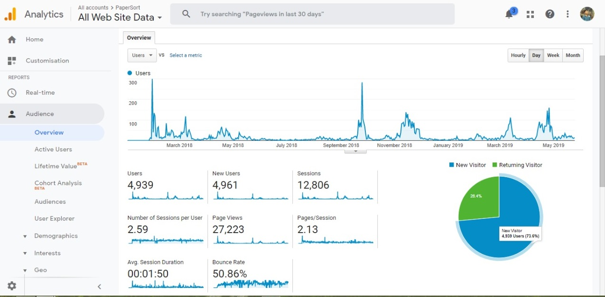
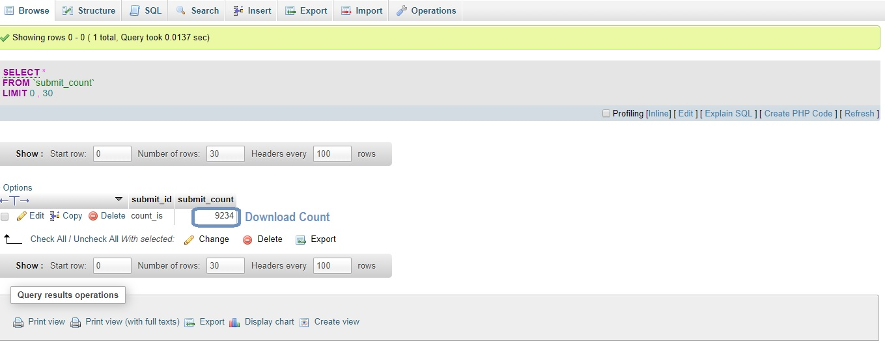

PaperSort
Papersort was an effort towards a centralised platform where students from all over the country can find their college question paper and notes.
Technologies Used - PHP, MySQL, HTML, CSS, JS, AJAX
Team - Shashank Prakash, Sayak Sen
My Expierence -
I am a programmer who loves to code in Python. Python is just simple and elegant. And I hardly move on to another language. It was 4th Semester for me and I was meeting with Shashank after quite a bit. And we are the guys who talk to invent. And at the very day the idea Papersort was created. We planned and planned and completed the most of the codebase within 2 months.
I was reponsible to architect the website and choose appropriate technologies. I knew Python and Shashank knew PHP. I decided to go with PHP since Shashank already knew the language and PHP was heavily used for Web-Development. I started to sketch out different functionalities of our website as discussed with Shashank. The main challenge was - how to store question-paper/notes pdfs and list them dynamically in the website where once pdfs uploaded it will automatically get stored and listed in the wesite. So I thought of nifty little hack, lets define a particular format for file name like [SUB-ID][SUB-FULL-NAME][SUB-SHORT-NAME][YEAR]. And ask all those info while uploading, save the pdf using that name format and read the docs directory and list the pdfs accordingly. Not elegant but it worked like magic.
We kept on coding day and night, out efficiency was not good. We were programmers in process. It shouldn't be taken so long to complete the project but as I mentioned earlier I was a newbie with PHP. I leant PHP on the go. I had a basic coder mindset and implementing ugly code was not hard at all. Now after years, when I'm writing this blog and open the codebase to make some changes it always gives me a heart attact to see such un-coordinated and un-modular code. But since then we have grown alot and hope to start new projects soon.
Stats till now -


What I learnt -
1. Writing bad code and still working them out is not a good idea.
2. Why solving a problem is important than coming up with a simple hack.
3. Why VCS is important.
4. Paid hosting is alot better.
5. Working in a team is hard but alot better, specially when you got rockstar coders along your side.